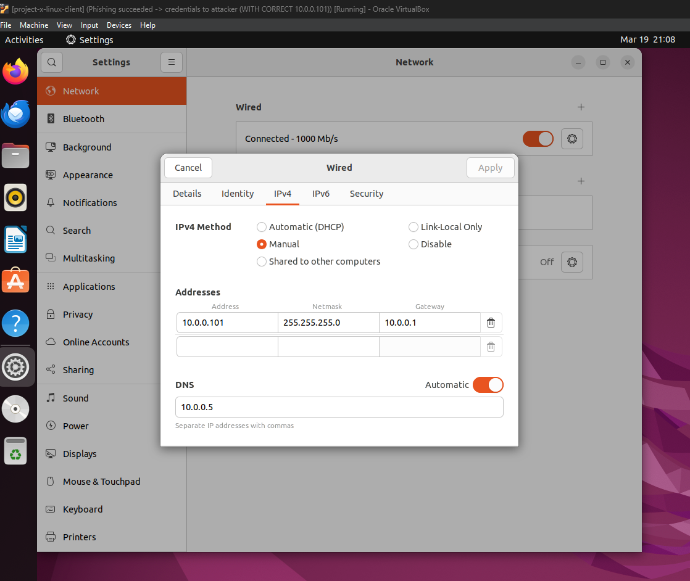
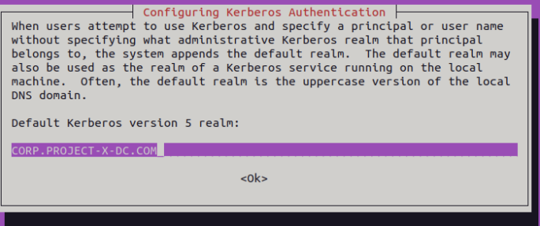
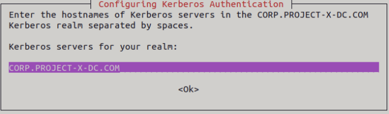
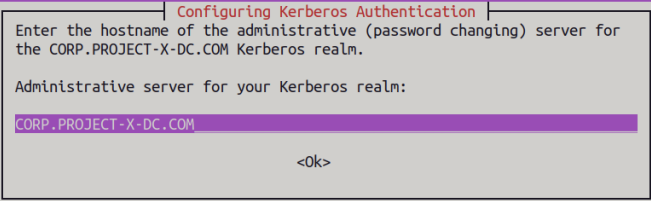
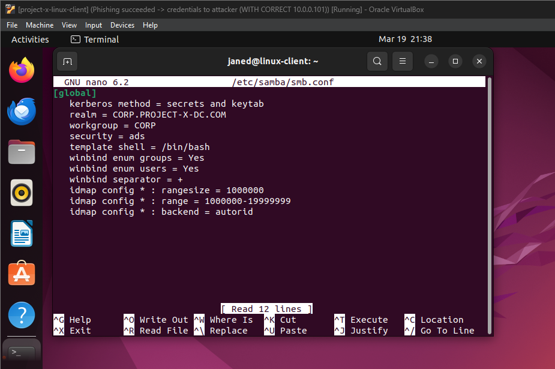
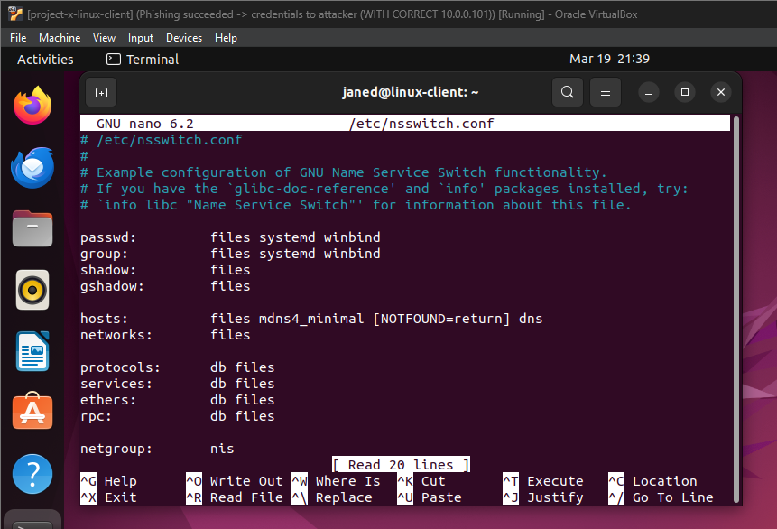
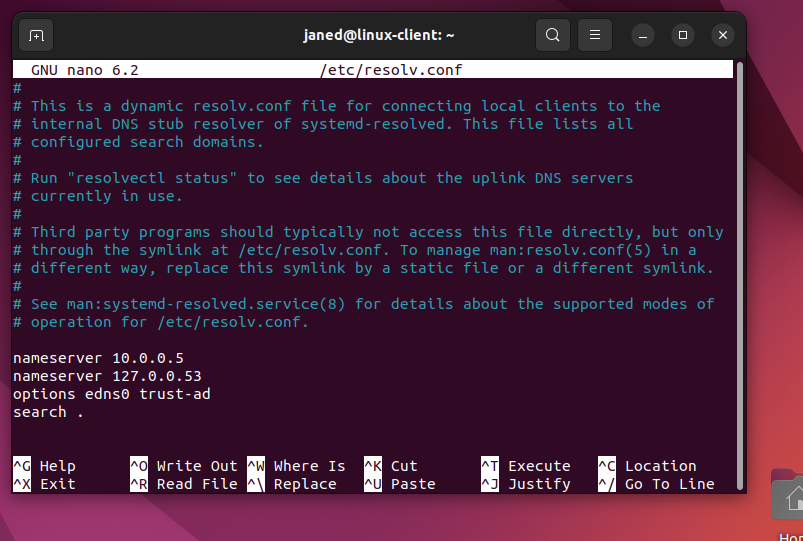
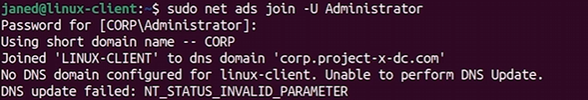
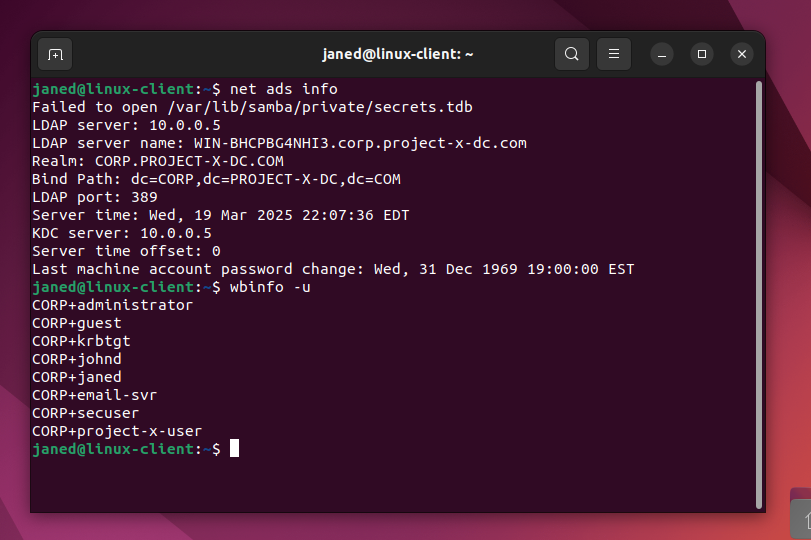

Overview
In this project, I provisioned an Ubuntu Desktop 22.04 workstation and configured it to integrate with a Windows Active Directory (AD) domain, allowing centralized user authentication. This workstation was intended for the user janed, whose account was created and managed from the domain controller.
Configuring Network Settings
After installing the OS, I of course again needed to configure the machine's network settings by assigning it a static IP address (10.0.0.101) and linking it to the Active Directory domain.

Connecting Ubuntu to Active Directory
Since Linux is not native to Microsoft, I had to use third-party libraries to connect to the Domain Controller. I used a service called Samba Winbind, which allows Linux systems to authenticate users against Windows Active Directory and integrate with Windows network environments.
I followed instructions from this guide:
Server World - Samba Active Directory Integration
I laid out the instructions for easy viewing:
- Prior to installing Winbind, I updated the system within the terminal with:
sudo apt update
- Installed the required packages:
sudo apt install realmd sssd sssd-tools samba-common krb5-user packagekit libnss-sss libpam-sss adcli samba-common-bin



Configuring Samba for Active Directory
- Moved the existing Samba configuration file for backup:
sudo mv /etc/samba/smb.conf /etc/samba/smb.conf.org
- Then added the configuration from
this guide
and pasted it into my terminal session, replacing realm and workgroup with CORP.PROJECT-X-DC.COM and CORP:
sudo nano /etc/samba/smb.conf

Configuring Winbind for Authentication
- Added "winbind" to the
/etc/nsswitch.conf file under the passwd and group lines.
sudo nano /etc/nsswitch.conf

Configuring DNS for Active Directory
- I then proceeded to change DNS settings to 10.0.0.5, which is the Domain Controller.
sudo nano /etc/resolv.conf

Joining the Domain with Administrator
8. From here, I joined the domain using the administrator account so user janed could sign in with the account that was created in the Active Directory project.
sudo net ads join -U Administrator
I used the same password for all workstation and server virtual machines when prompted to enter. The administrator account for the domain controller was the only one with a different password.

Restarting Winbind
9. After joining the domain, I restarted Winbind to ensure authentication services were running correctly.
systemctl restart winbind
Verifying Active Directory Integration
After joining the domain, I verified that the system was properly connected to the Active Directory environment.
- Displayed Active Directory services information:
net ads info
After running this command, I confirmed that the system could see the LDAP server 10.0.0.5 and the domain name CORP.PROJECT-X-DC.COM.
- Listed all Active Directory users:
wbinfo -u
Several users were already displayed (including janed) because I had already completed my project and am now documenting some of the previously missing steps in my notes.
